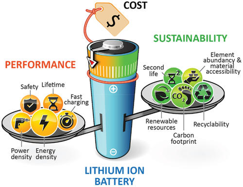
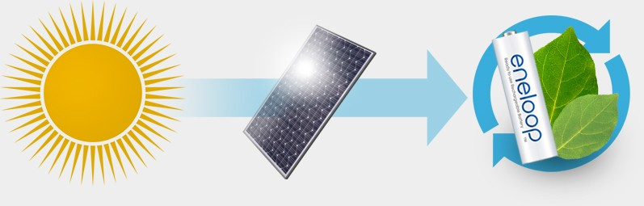
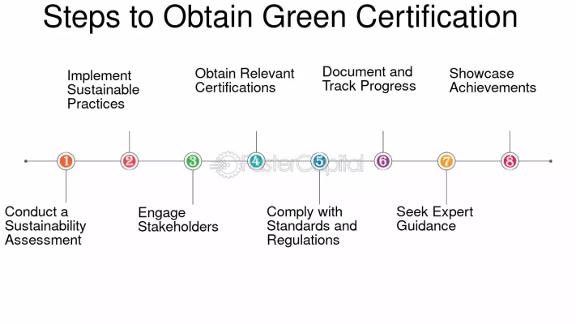

In today's fast-paced world, batteries power everything from our smartphones to electric vehicles (EVs). However, their production and disposal often come at a high environmental cost. Enter Green Battery Certification, a beacon of sustainability in the energy storage sector. This certification isn't just another label; it's a commitment to responsible manufacturing, energy efficiency, and recycling standards.
What is Green Battery Certification?
Green Battery Certification refers to an official recognition awarded to batteries that meet specific environmental, ethical, and efficiency standards. These certifications are granted by regulatory bodies such as ISO (International Organization for Standardization) and UL (Underwriters Laboratories), ensuring adherence to global best practices.
Key Components of Green Battery Certification
- Lifecycle Sustainability: The certification emphasizes sustainability throughout the entire lifecycle of batteries—from raw material extraction to recycling. The new European Battery Regulation mandates that all battery models disclose their carbon footprint, a crucial step towards a circular economy.
- Battery Management Systems (BMS): These systems are essential for managing battery performance and safety, particularly under new environmental standards. They play a critical role in ensuring that batteries meet sustainability criteria.

- Environmental Impact Reduction: The regulation focuses on reducing the environmental impact of battery production and usage. This includes requirements for using clean energy during manufacturing, minimizing hazardous substances, and ensuring efficient end-of-life management through recycling.
- Transparency and Accountability: Manufacturers will need to provide detailed information about their products' sustainability metrics, including carbon footprint and recycled content. This transparency allows consumers to make informed decisions and encourages manufacturers to adopt greener practices.
- Third-Party Verification: To ensure compliance with sustainability standards, third-party verification will be mandatory for certain requirements, enhancing accountability within the industry.
How It Works for Batteries
- Certification Process: When batteries are produced using electricity generated from renewable sources, manufacturers can claim Green Certificates corresponding to the amount of renewable energy used in production. For example, Panasonic charges its Eneloop batteries using solar power and participates in the Green Certificate program, promoting a “Clean Energy Loop”.

- Trading Mechanism: Green Certificates can be traded in compliance markets or voluntarily. Companies and consumers can purchase these certificates to offset their carbon emissions, effectively proving their commitment to sustainability.
- Market Dynamics: The price of Green Certificates fluctuates based on supply and demand, influenced by governmental policies that set specific renewable energy targets. This market-driven approach allows for flexibility in how companies meet their sustainability goals.
- Environmental Impact: By participating in the Green Certificate system, companies not only enhance their environmental credentials but also contribute to reducing overall carbon emissions associated with energy production. This is particularly beneficial for industries like battery manufacturing, which traditionally have a significant carbon footprint.
Industry Impact
The implementation of Green Battery Certification is expected to drive significant changes across the battery supply chain:
- Increased Adoption of Renewable Energy: Companies like Panasonic are already utilizing solar power to charge batteries, contributing to a cleaner energy loop.
- Innovation in Battery Technology: As manufacturers strive to meet certification requirements, there will likely be increased investment in research and development for more sustainable battery technologies.
- Consumer Awareness: With clearer information on the environmental impact of batteries, consumers can make more sustainable choices when purchasing electric vehicles and other battery-operated devices.
Steps to Obtain Green Battery Certification
- Submit an application to a certifying body.
- Undergo a compliance audit.
- Implement recommended changes.
- Receive certification after meeting standards.

Case Studies of Certified Green Batteries
Case Study 1: Tesla’s Sustainable Battery Production (Global): Tesla focuses on energy-efficient manufacturing and closed-loop recycling.
Case Study 2: Panasonic's Green Energy Solutions (Global): Panasonic follows strict eco-friendly protocols for battery production.
Case Study 3: CATL's Closed-Loop Recycling System (Global): CATL recycles battery materials effectively, reducing environmental harm.
Case Study 4: Samsung SDI's Eco-Friendly Battery Practices (Global): Samsung SDI emphasizes energy efficiency and minimal waste.
Case Study 5: Exide Industries’ Green Battery Initiative (India): Exide Industries Limited is adopting global standards for sustainable battery production, with advanced recycling technologies.
Case Study 6: Amara Raja Batteries’ Sustainable Practices (India): Amara Raja Energy & Mobility Ltd focuses on energy efficiency, waste reduction, and transparent sourcing in its manufacturing plants.
Conclusion
The Green Certificate system serves as an essential tool in promoting sustainable practices within the battery industry. By linking battery production to renewable energy sources through tradable certificates, it encourages manufacturers to adopt greener technologies and supports broader environmental goals. This system not only benefits individual companies but also plays a crucial role in the transition towards a more sustainable energy landscape.